על צדק, טכנולוגיה ודמות השופט
תום הגלעדיחיפה · 6 באוקטובר 2026
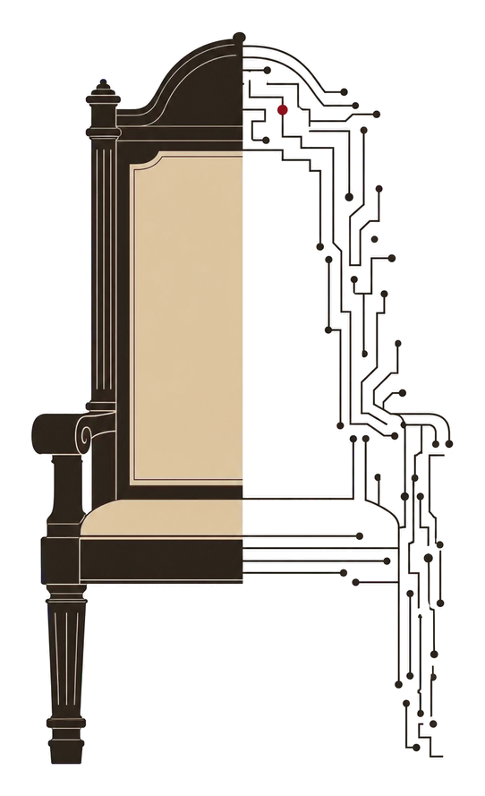
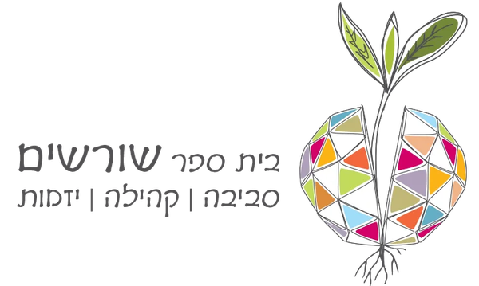
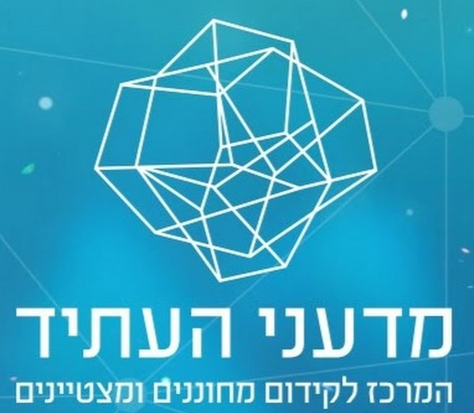
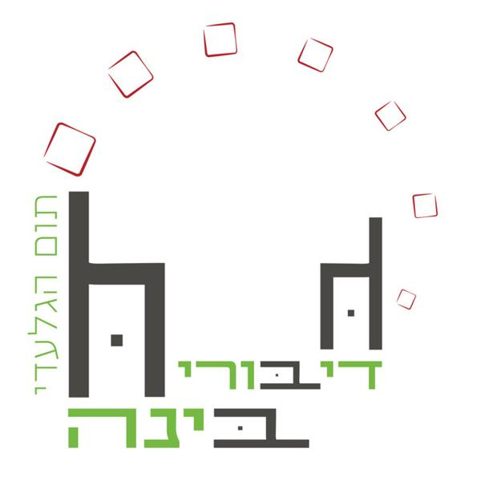
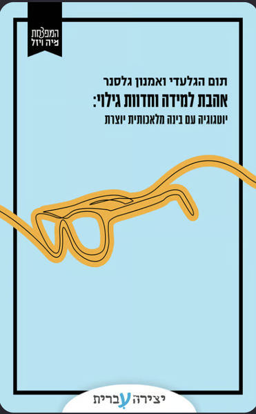
אינני משפטן ואיני בקיא בתחום המשפט.
תחום מומחיותי הוא הפילוסופיה של הטכנולוגיה, ובפרט טכנולוגיית הבינה המלאכותית.
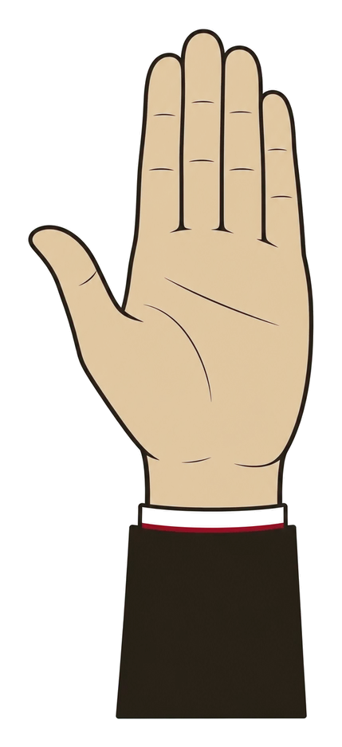
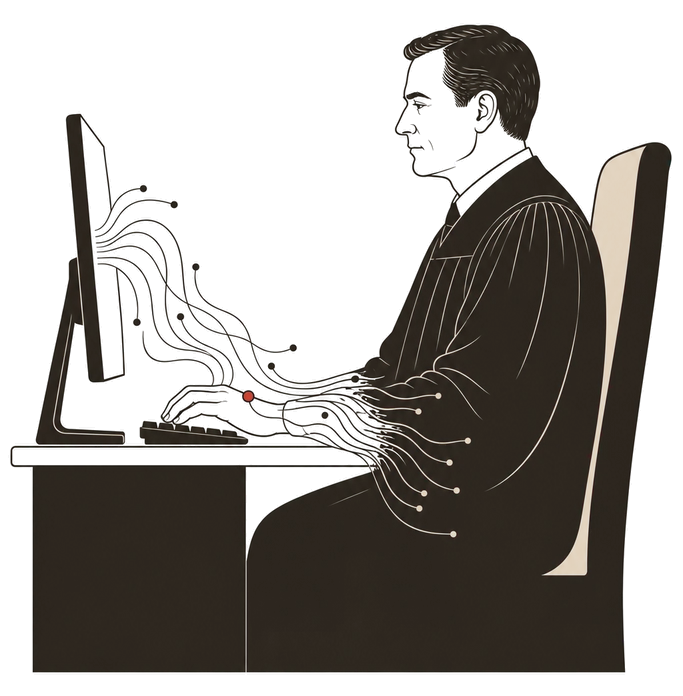
נתחיל אנקדוטלי ופשוט יחסית
ונסיים במורכב והמדאיג
הבינה המלאכותית מנגישה צדק להמונים:
ברכה של ממש - צדק ממשי ומוחשי
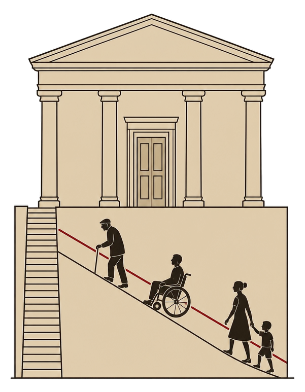
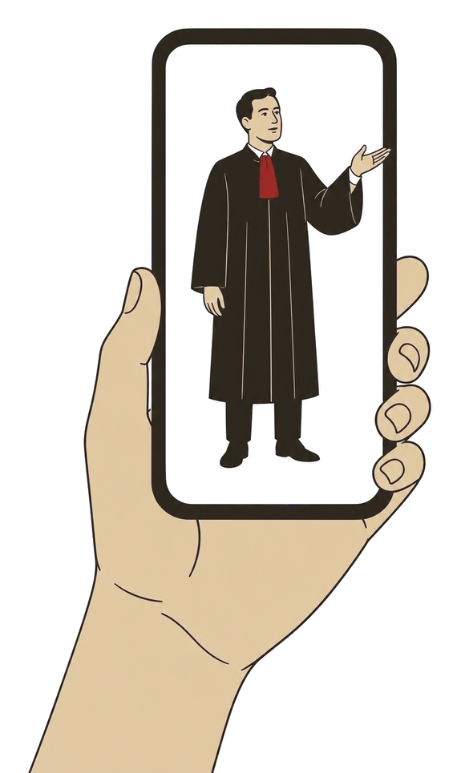
מאזן כוח חדש: האזרח מול הגופים החזקים
"אחרי מייל כזה מקצועי - מה נותר לעשות?"מנהל הלקוחות של החנות
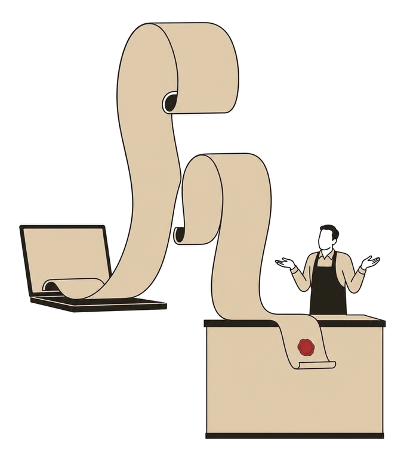
ויליאם סטנלי ג'בונס·1865·על שאלת הפחם
כי עכשיו אפשר.
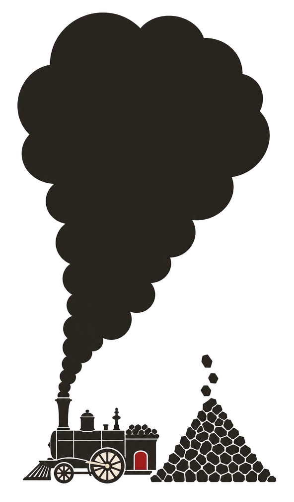
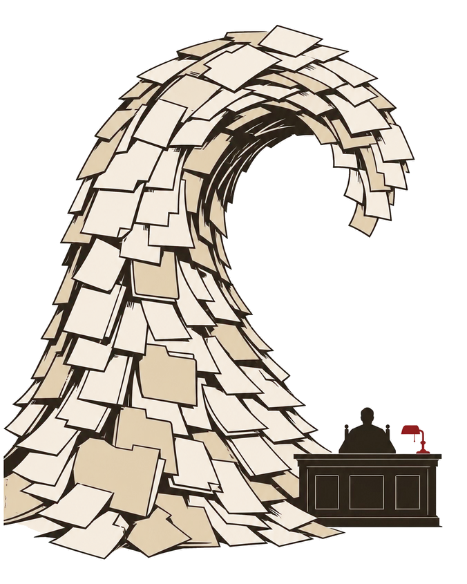
במרוץ חימוש אסימטרי - וכבר מאותת לנו את הסכנה
ועלות הכלים
פילוג חברתי: החזקים מתחזקים, החלשים נחלשים
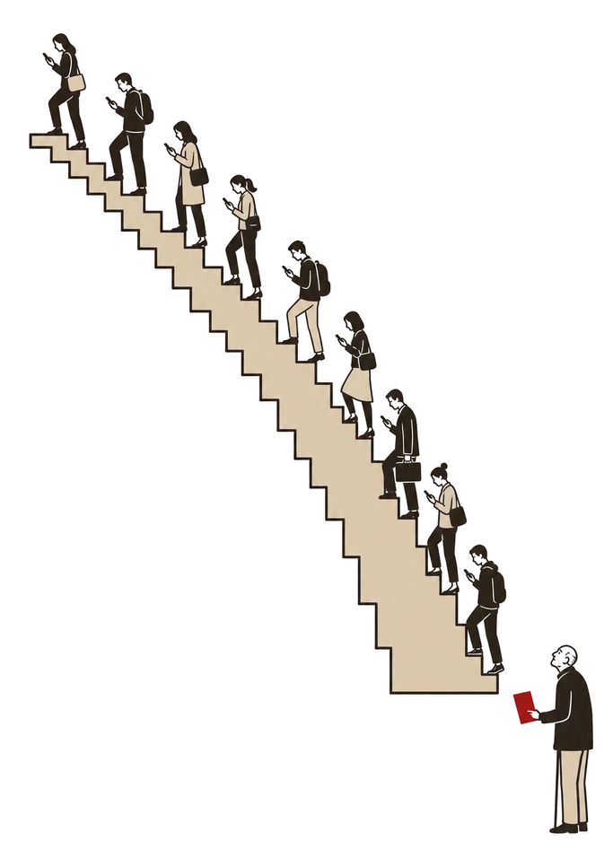
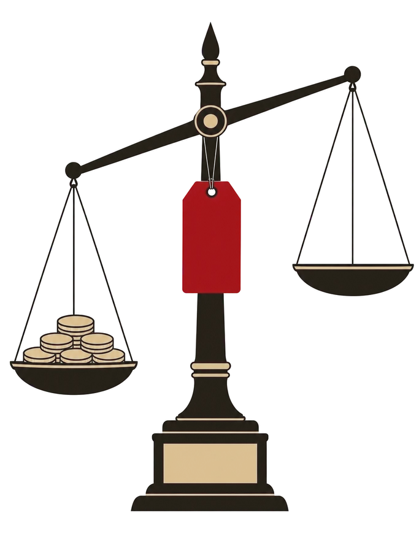
(עשיית הצדק)
מי שאין בכיסו כסף לכלים בתשלום - מודר
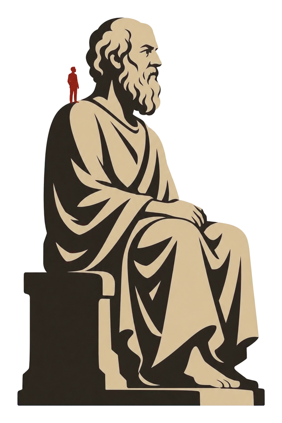
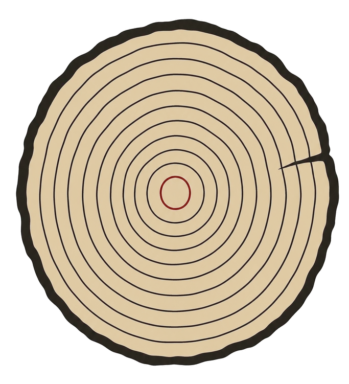
והמפגש עם איכותה של הבינה האנושית
חדירת הבינה המלאכותית למשפט אינה שדרוג אינסטרומנטלי, אלא
שינוי-משטר במקורות הלגיטימציה המשפטית
אינה שהמכונה תיכשל,
אלא שהיא
תצליח
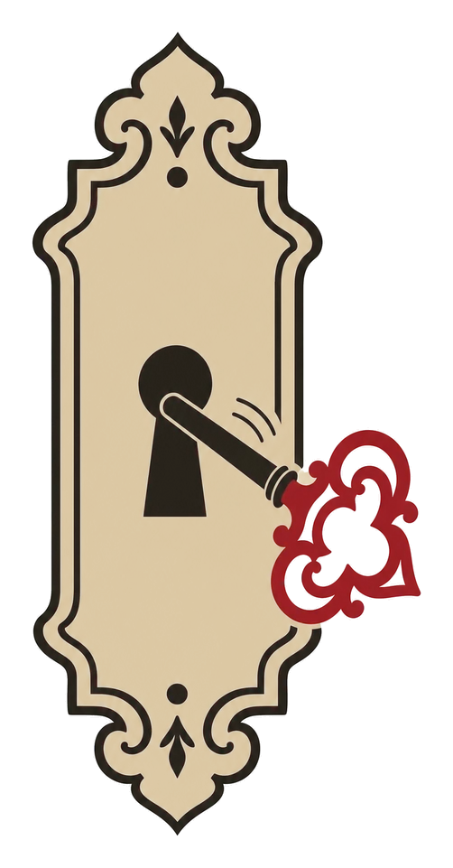
נימוק פומבי - הכרעה שלטונית חייבת להיות מלווה בהצדקה נגישה, הניתנת לבחינה ולערעור בידי נמעניה.
אותנטיות אפיסטמית של הרשומה המשפטית - התקדים המצוטט אכן ניתן, נוסחו הוא נוסחו, ואפשר להתחקות אחר שרשרת המקורות עד למקור מוסמך.
מצפון אנושי בהכרעה - הכרעה שיפוטית איננה יישום דדוקטיבי של כלל על עובדות, אלא מעשה של תבונה שנקנתה בניסיון חיים ושאינה ניתנת לרדוקציה.
כלליות ושוויון בפני החוק
פומביות, בהירות וקביעות - גלויה ומובנת למי שהיא חלה עליו, ויציבה די הצורך כדי שאפשר יהיה לתכנן חיים לאורה.
כושר תיקון מוסרי - יכולתה של השיטה לזהות את עוולותיה ולתקנן (שוויון האישה, זכויות להט"ב, איסור אפליה).
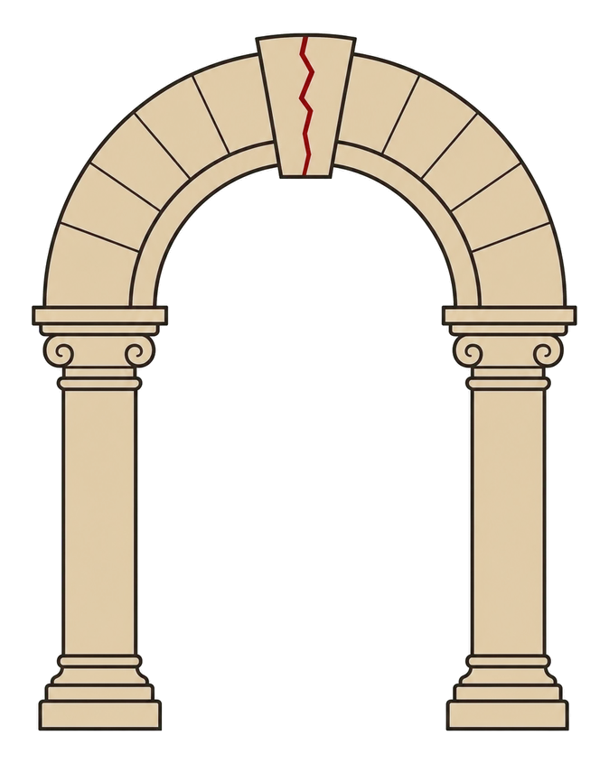
פגיעה בכל אחד מהתנאים אינה מורידה את איכות המשפט - היא מבטלת את הווייתו כמשפט
נראות של מערכת בתפוקות גבוהות
שהייתה משפט, ומקור סמכותה היה לגיטימי
ודעכה לכדי מערכת בקרה חברתית
ששת תנאי הלגיטימציה של המשפט
אל מול
איכויותיה של הבינה המלאכותית
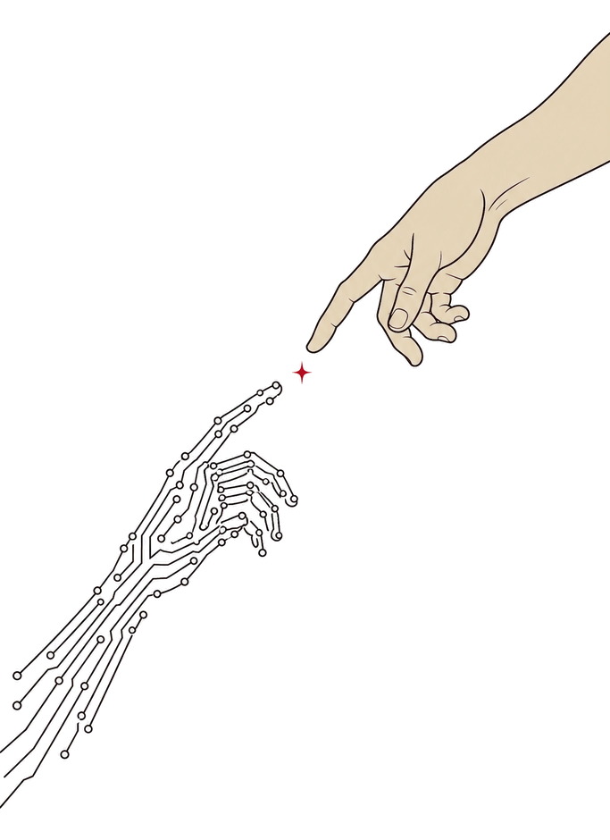
הגירת מקור הסמכות מן הנימוק הפומבי אל החישוב הסמוי
פסקי הדין ייראו מנומקים ורהוטים מאי פעם
הקשר בין הנימוק המוצהר להכרעה בפועל יישחק בשקט ובהזדחלות
גם התחנה החדשה קרסה
אנשי המקצוע של החנות צדקו מההתחלה
המכתב היה משכנע - אבל לא נכון
שכנוע הוא תכונה של פלט. הצדקה היא מעמד של מעשה.
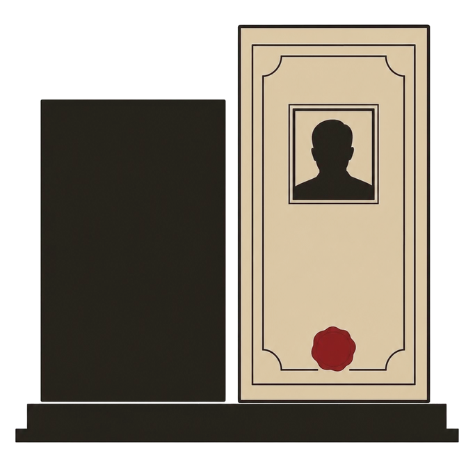
הרציונליזציה האנושית - בת תקיפה, גם אם אינה בת אימות
הגירת (או דעיכת?) מקור הסמכות
מן הנימוק הפומבי
אל החישוב הסמוי.
המשפט הוא מוסד אפיסטמי - ואולי נתקל בנגיף שמערכת החיסון שלו אינה מכירה
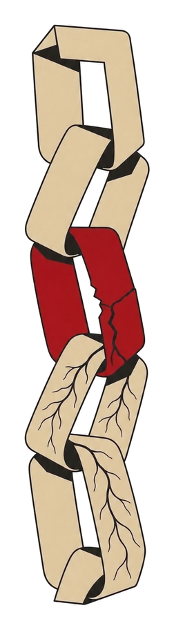
טקסט משפטי סינתטי חוצה את סף בית המשפט, בהתחזות לאסמכתא אמיתית
פסק דין שחוזר על אסמכתא בדויה בלי בדיקה מעניק לה גושפנקא ומטשטש את עקבותיה
הזיכרון המוסדי של המשפט אמין לא משום שנבדק בכל שימוש - אלא משום שדרך ייצורו ערבה לו:
האותנטיות האפיסטמית של הרשומה:
היותה מקור ידיעה,
ולא מאגר עשיר של טקסטים.
טעויות אנוש היו תמיד, ויש להן מנגנוני תיקון. אבל:
הסכנה: משפט שרשומותיו מזוהמות יפעל ביעילות גוברת לזמן מה - בעוד סמכותו נשחקת
מי רשאי לשאת באחריות להכרעה שבכוחה לשלול את חירותו של אדם?
שנים של תודעה אנושית, השוכנת בתוך גוף, בעולם גשמי
ומה בין זה למצפונה של המכונה?
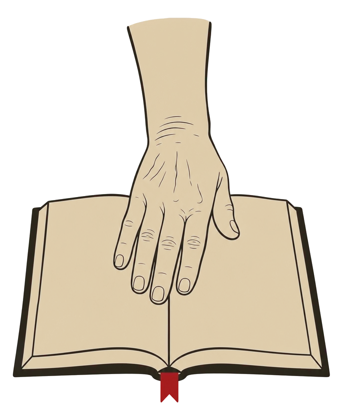
הלגיטימציה של הכרעת הדין אינה נובעת מכך שהיא מדויקת יותר
גם אם נכיר בכך שהדיוק הוא צדק
אלא מכך שמקור השיפוט אנושי
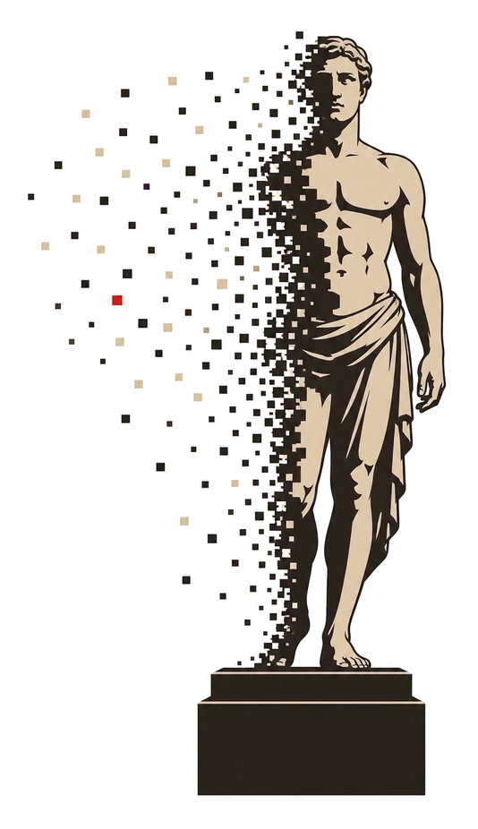
נורמה כללית מכוננת קהילה של שווים - וזירה ציבורית לשיח על תוכנו של הדין
אין עוד "אדם סביר" שאפשר להתדיין עליו - בפסיקה, בכיתה, בבית המחוקקים
אלא מיליוני ציונים אישיים
אבל הוא מפרק את הסטנדרט המשותף: גלוי לוויכוח, וכולנו כפופים לו יחד, כשווים
הכלל שציבור של שווים נתן לעצמו
הכיול שמערכת מחשבת עבור כל אדם לבדו
את התנאים שבזכותם הדין היה ראוי לציות - ולא כפוי על נמעניו
מודל שאומן על הפסיקה האנגלו-אמריקאית עד אמצע המאה ה-19
דיוק ניבוי מרשים - ללא צדק
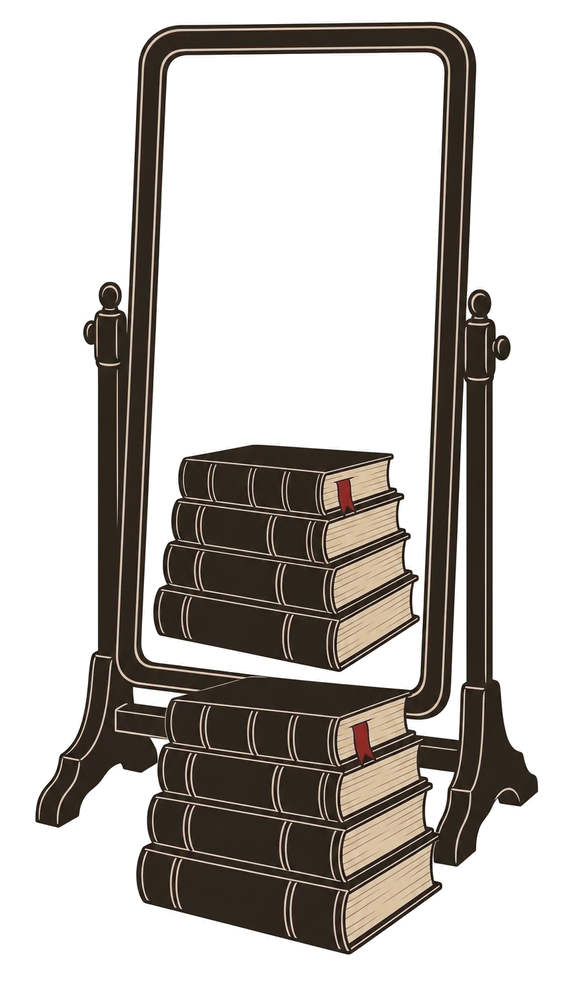
קפיצות הגדילה של המשפט אינן אקסטרפולציה סטטיסטית של נתוני העבר,
אלא שבירה מכוונת של הדפוס
שעלותה האנרגטית רבה
אם כך, נאמן את המודלים על שוויון, הוגנות וכבוד האדם.
אימון על ערכים "נכונים" - זה בדיוק מה שהיה עושה טכנולוג בינה מלאכותית במאה ה-19
החלפה של נעילה בנעילה ערמומית יותר
מערכת המתקנת את עצמה מבפנים, מתוך מאבק
מערכת המתעדכנת מבחוץ, בידי מי ששולט בה
הסמכות לקבוע מהו ערך ראוי נודדת מן הזירה הציבורית - אל חדרי האימון של מי שמחזיק במודל, ואינו חב לציבור דין וחשבון
משפט כזה אינו חדל לתפקד. הוא מתפקד היטב, אולי טוב מתמיד: מכוון התנהגות, מקצה סיכונים, מייצר צייתנות.
אבל כמערך ויסות של מיקרו-תמריצים - בקרה חברתית יעילה - ולא כמוסד המדבר אל אזרחיו בשפת הטעמים.
האזרח: מנמען של הצדקה - לאובייקט של ניהול סיכונים.
התרוקנות הלגיטימציה בשיא היעילות: משפט מקסימלי ביעילותו ומינימלי בלגיטימיותו
האם להשתמש בבינה מלאכותית בבתי המשפט?
בוודאי שכן.
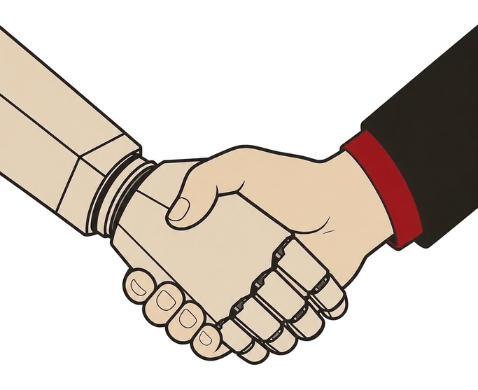
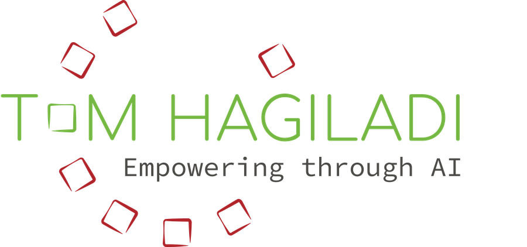